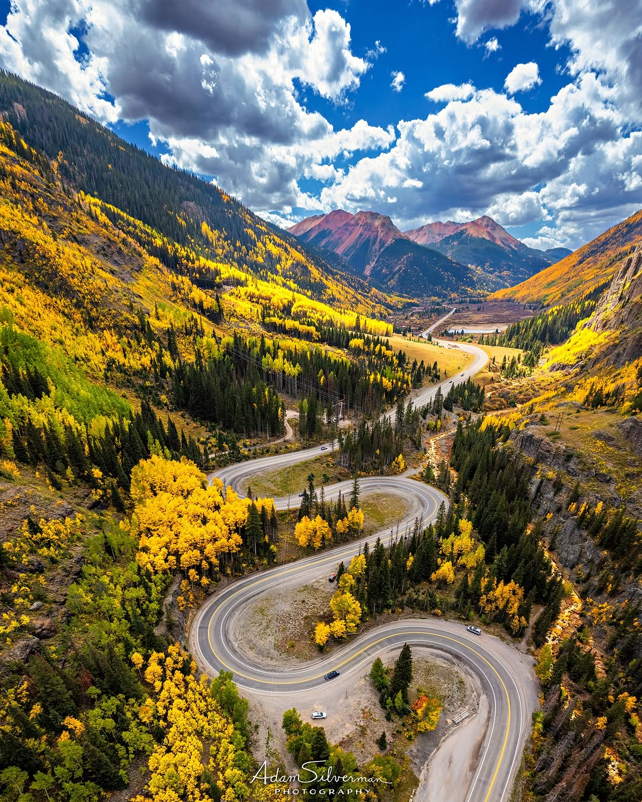

01 The photograph

View original Instagram post ↗
02 The GIS alignment
N ↓
900 m of US 550 · South up · NAD83 / UTM 13N
03 The road in three dimensions
Lifting the road into view…
USGS elevation · OpenStreetMap centerline
30DAYMAPCHALLENGE 2026 15 / INSIDE OUT
Switchbacks of the Million Dollar Highway

900 m of US 550 · South up · NAD83 / UTM 13N
Lifting the road into view…
USGS elevation · OpenStreetMap centerline